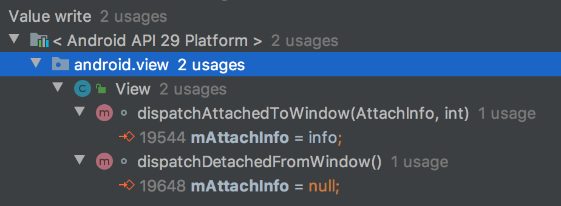

写在前面
一个多月前参加公司的 ATRS 活动，督促自己学习总结，但坚持不好，借口就不找了，7 月重新出发，我要优先保证每周都有新的总结，再逐渐提高质量。
Algorithm 暂时不随机，先把常见数据结构相关过一遍。Tip 和 Review 每周要有新的总结。Share 如果当周实在没有自己的思考见解，可能会跳过。
Algorithm
20.Valid Parentheses 验证括号
验证括号匹配，字符串只包含括号所以难度为 easy，问题聚焦于匹配。
匹配问题通常借助栈后进先出的特性处理，遇到 begin 入栈，遇到 end 出栈比较是否匹配。这里左括号入栈，右括号和栈顶的前一个左括号比较。
剩下问题是边界，比如一个括号的情况，初次提交时居然没考虑全，心态太松懈了没检查就提交了，下次要注意才行。
最终显示占内存比较多，估计是因为我多申请了一个 map 用来存储括号匹配，但我认为这样可读性高了很多，利于逻辑维护，比如增加新的括号种类。
Code
Tip
平时开发调试通常都是连上手机 Android Studio Run 一下就好了，但在一台 OPPO 上居然提示 INSTALL_FAILED_TEST_ONLY 错误，-t 参数明明自动加了为啥没用呢，真让人头大。
问题原因
INSTALL_FAILED_TEST_ONLY 错误的直接原因，是系统默认会禁止安装 AndroidManifest.xml 中包含属性 android:testOnly="true" 的应用。Manifest 文档
项目 Manifest 通常不会手动增加此属性，而是 Android Studio Run 会自动添加此属性。
可这样 Run 不就无法安装了吗？检查 AS Run 运行的命令 adb shell pm install -t -r xxx.apk，发现参数 -t -r，查看 ADB 文档 可知 -t 参数用于安装 test APK：
上面这些我已经知道了，但解决不了 OPPO 的问题，因为 -t 参数已经加了。仔细观察安装过程，发现 OPPO 在安装过程中还有一步扫描病毒，怀疑是中间这步把 -t 参数丢掉了。
OPPO 安装不了 testOnly 的 APK，那另一个解决方向就是打包非 testOnly 的 APK，不通过 AS Run 打包接口，可运行 gradle 命令 ./gradlew intallDebug 或简写 ./gradlew iD，包含了 install 命令也非常方便。
方案总结
- 安装 testOnly 的 APK:
adb install -t apk - 打包非 testOnly 的 APK:
./gradlew installDebug
话说回来，官方设计 android:testOnly 这个标签是为了什么呢？结合 Manifest 和 ADB 文档，testOnly 是为了明确标记测试版应用，无法正常安装，也无法上传 Google Play，除了 AS 自动标记外，使用了 preview SDK 也会强制标记，这样可避免测试应用被错误发布。
Review
无
Share
问题：View.postDelayed 会引起内存泄露吗？如何避免内存泄露？
问题缘起，重构时发现老代码中用 View.postDelayed(runnable) 进行了延时任务，我当时对这个方法的实现细节并不熟悉，但从名字猜测内部实现还是 Handler，应该需要在 View 销毁时取消，所以调用了 View.removeCallbacks(null) 来取消任务。同事 Review 时提出这样并无法取消延时任务，深感惭愧，没有搞清楚就写了代码，所以赶紧将这部分搞清楚避免再有困惑。
看到 View.postDelayed ，你的脑海里是否也有以下几个问题？
- 1.
View.postDelayed执行延时任务，如果任务还未执行 View 就销毁了，会导致内存泄露吗？ - 2.
View.postDelayed执行延时任务，要如何取消任务？
为了回答这几个问题，需要搞清楚
- 3.How：
View.postDelayed是如何实现的？ - 4.Why：为什么 View 需要提供
post()和postDelayed()这两个方法呢？Handler 不是已经提供好了吗？
首先我们可以先做一个小实验确认一下问题。用 View.postDelayed 执行一个 toast 显示任务，延时 10 秒，然后关闭 Activity。猜猜看会怎样？10 秒后，toast 显示了！
这样我们就先确认了问题 1 内存泄露是存在的，这样看逻辑时也更有针对性一些。带着以上问题，我们来一起看一看关键代码。
1 | public boolean postDelayed(Runnable action, long delayMillis) { |
两种情况
- A：AttachInfo 存在，则执行 Handler.postDelayed()，这里和猜测差不多内部依然是 Handler。那么是否可能会泄露的重点就是这个 Handler 是否会清空消息。
- B：AttachInfo 不存在，则放入队列。这部分官方特意写了注释，runnable 将推迟执行，假设 attach 之后将执行。
那么 AttachInfo 是什么？来自哪里？搜索字段引用可知 View.mAttachInfo 在 dispatchAttachedToWindow 时赋值，dispatchDetachedFromWindow 置空，看起来和 View 生命周期有关。
继续探究分支 B 情况，getRunQueue 返回的 HandlerActionQueue 类，postDelayed 方法并未执行 runnable，而是用数组暂存了这些 runnable，等到 executeActions(Handler Handler) 再把暂存的 runnable 全部通过 Handler 放入消息队列，同时置空数组。具体可查看类 HandlerActionQueue。
现在需要知道 executeActions 是被谁调用的，参数 Handler 是哪来的。发现 executeActions 是在 dispatchAttachedToWindow 被调用的，参数 Handler 就是 attachInfo 的 Handler。
那 dispatchAttachedToWindow 是被谁调用的？attachInfo 从哪来的？这里先按下不表。
1 | voide dispatchAttachedToWindow(AttachInfo info, int visibility) { |
现在我们知道了，postDelayed 传入的 runnable，要么在 HandlerActionQueue 中暂存着，要么在消息队列中。对于问题 1 View 销毁后内存泄露，只需要确认这两处即可。
- View 未 attach 就销毁了，那么 runnable 被
HandlerActionQueue引用，queue 被 View 引用，View 没有引用，没有泄露。 - View 在 attach 后销毁，那么 runnable 已经被 attach.Handler 添加到 MessageQueue 了，被 MessageQueue 引用导致无法回收，直到执行完毕或主动移除。就是这里导致了泄露。
此时我们知道有内存泄露了，接下来是问题 2 如何取消任务避免内存泄露。
Handler 可以通过 removeMessages(null, null) 移除此 Handler 所有的消息，具体实现是遍历了消息队列中所有 target 为此 Handler 的消息。
View 如何移除 callback？只有一个方法 View.removeCallbacks ，提供 runnable 对象可以移除此对象。
1 | public boolean removeCallbacks(Runnable action) { |
与 Handler 不同的是，传 null 不会移除所有消息。这是为什么呢？我觉得是因为这个 Handler 不是这个 View 专用的，而是多个 View 复用的，所以无法按 Handler 移除所有了。那为什么不能专人专用呢？猜测可能是为了效率，避免产生过多的对象。
- 方案 1: 保存好 runnable 对象引用，销毁时主动调用 View.removeCallbacks() 来移除消息。
- 方案 2: 如果希望清除所有 runnable，可以考虑不用 View.postDelayed() 而改用 Handler，通过 Handler.removeCallbacksAndMessages(null) 来清除所有消息避免内存泄露。
可是问题 4 依然没有头绪，为什么 View 需要提供 post() 和 postDelayed() 这两个方法呢？Handler 用起来不是更方便吗？能方便清除所有消息避免泄露。
我觉得为了搞清楚这个问题，不得不提到 View.post 的一个常见用途：获得 View 的大小。
在 Activity.onCreate 时，或者说 View 刚刚创建时，是无法获得 View 的大小的，这很容易理解，因为此时 View 还未进行 measure 和 layout，还不知道自己的大小。但通过 View.post 执行的任务，却可以获取到 View 的大小，这是为什么呢？
现在我们知道，View.post() 的任务会先暂存到 HandlerActionQueue ，直到 dispatchAttachedToWindow 时才放入消息队列。所以 dispatchAttachedToWindow 的执行时机很关键，其与 measure 和 layout 的执行顺序很重要。但这时搜索引用会发现找不到了，这说明调用点在系统源码中。
如何检索源码呢？之前用过 GrepCode 和 Android SDK Search 都各自缺陷，好在官方终于在半年前发布了 Android Code Search，体验很好。
搜索 dispatchAttachedToWindow，点击方法名就可以看到引用点，看到 ViewRootImpl 的调用点：
1 | private void performTraversals() { |
performTraversals 方法先调用了 view.dispatchAttachedToWindow，然后调用了 performMeasure 测量、performLayout 布局、performDraw 绘制。
这时我们需要理解 Android 的消息驱动机制。TODO
所以 dispatchAttachedToWindow 时入队的消息，会在 measure 执行完毕后才执行。
总结
- View.postDelayed 有可能导致内存泄露，使用时一定要注意！
- View.postDelayed 的任务如何取消？只能通过 runnable 引用来指定取消。removeCallbacks(null) 不会取消任何任务！
- 为什么 View 要提供 post 方法？我认为是为了方便在 View attach 之后执行一些操作，比如获得 View 的大小。（但因为 View 可能多次 measure 和 layout，所以 OnLayoutChangeListener 更靠谱）
- 查看 Android 源码认准 Android Code Search